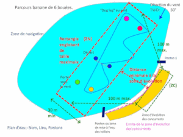

Test de l'algorithme de placement de bouées dans une zone de navigation de voile radiocommandée.
En cours...
Positionnement des bouées du parcours
Entrez la direction d'où souffle le vent en degré puis cliquez "Soumettre"
TWD ° ? ,
Zoom:?
X:? Y:?
Lon:? Lat:?
Zone de navigation et bouées fixes...